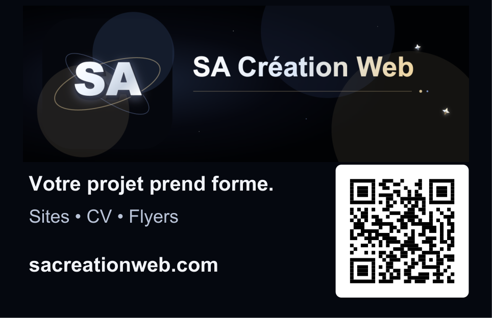
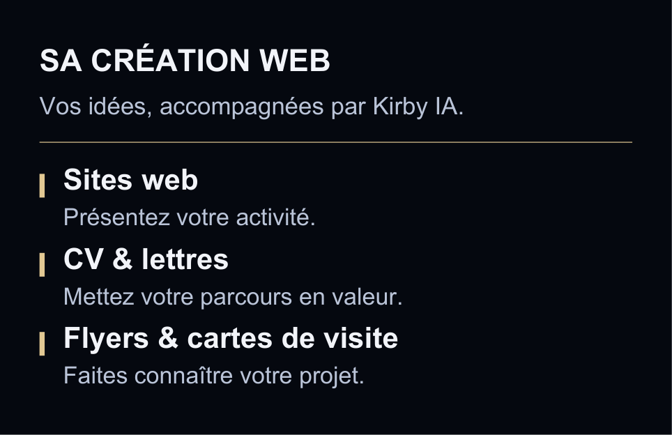

Votre carte SA Création Web
85 × 55 mm · Recto verso · QR code de 23 mm
Voici la carte créée, avec votre logo et les trois services au verso.


Impression : A4 paysage, taille réelle 100 %, recto verso sur le bord court. Quatre cartes par feuille, avec repères de coupe.
Le bouton « Personnaliser dans Kirby » ouvre une version modifiable avec les mêmes informations et le logo, adaptée aux modèles de l’éditeur. Les PDF ci-dessus conservent exactement la présentation affichée ici.